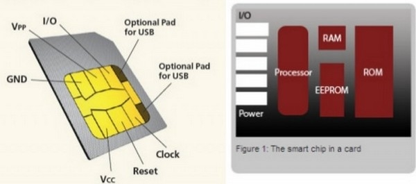

Сим-сим открылся
31 июля 2013
По давно сложившейся традиции SIM-карту принято считать наиболее надежно защищенным элементом всей системы мобильной связи GSM. Ныне же выясняется нечто иное. В реальности защита эта не только хуже, чем могла бы быть, но и ослаблена она, похоже, умышленно...
Суть нынешних открытий вполне доходчиво передает такая цитата:
«Мы можем дистанционно (через SMS) установить программу на мобильный телефон жертвы, причем эта программа будет работать полностью независимо от телефона. Мы можем шпионить за вами. Можем добыть ваши криптоключи, используемые для шифрования телефонных звонков. Мы можем читать ваши SMS. Помимо же просто шпионажа, мы (так же через SMS) можем похищать из SIM-карты телефона критично важные данные о владельце — вашу мобильную личность — и снимать деньги с вашего счета».
Все эти малоприятные, чего уж там говорить, слова принадлежат человеку по имени Карстен Ноль (Karsten Nohl). А в профессиональных кругах компьютерной безопасности Карстен Ноль — личность весьма известная.
За последние 4–5 лет с этим именем были связаны несколько очень громких и скандальных исследований-разоблачений, демонстрирующих реальную (не)надежность защиты важных цифровых устройств, которые по умолчанию считаются достаточно безопасными. Среди наиболее известных историй такого рода можно назвать две.
В 2008 году Карстен Ноль прославился как один из ключевых участников большой и распределенной по нескольким странам исследовательской инициативы, в рамках которой была проведена обратная инженерная разработка RFID-чипов Mifare. Миллиарды таких чипов радиочастотной идентификации, можно напомнить, по всему миру являются основой проездных билетов на транспорте, цифровых кошельков, социальных карт, пропусков на предприятия и прочих подобных приложений.
Схема защиты информации в этих чипах всегда держалась в секрете, а изыскания Ноля и его коллег позволили не только восстановить криптоалгоритм, но и указать на множество слабостей системы, допускающих многочисленные злоупотребления (типа клонирования карт и хищения критично важных данных).
На следующий год, в 2009-м, Ноль и его коллеги по германскому хакерскому сообществу Chaos Computer Club создали и открыто опубликовали в Интернете программный инструментарий, так называемую «радужную таблицу» (Rainbow Table) для вскрытия защиты GSM. Суть этой программы в том, что она позволяет очень быстро — примерно за минуту — отыскивать секретный ключ по умолчанию якобы сильного шифра A5/1, применяемого для засекречивания телефонных разговоров в сетях GSM.
При этом важно подчеркнуть, что речь идет не о подпольных работах какого-нибудь хакера-изгоя из компьютерного андеграунда, а об изысканиях вполне респектабельного и авторитетного исследователя. Созданная Нолем компания Security Research Labs, базирующаяся в Берлине, ныне консультирует германские и американские транснациональные корпорации по вопросам укрепления безопасности мобильной связи.
В рамках этих работ, в частности, с 2011 года фирма Security Research Labs всерьез занялась тестированием безопасности SIM-карт. То есть устройства, которое в системе GSM изначально принято считать наиболее защищенным элементом конструкции и вокруг которого выстраивается вся прочая архитектура безопасности.
Итогом этих двухлетних изысканий и стали, собственно, те неприятные открытия, о которых рассказывает ныне Ноль. Но чтобы лучше понять суть и важность исследования, для начала желательно иметь хотя бы общее представление о предмете изучения.
Устройство SIM
Аббревиатура SIM расшифровывается как Subscriber Identification Module, то есть «модуль идентификации абонента». Люди, не имеющие привычки вникать в мудреные технические тонкости всякого прибора, который попадает им в руки, обычно считают, что SIM-карточка — это просто что-то типа особо защищенной микросхемы для хранения информации.
То есть о SIM-карточках нередко говорят как о запаянных в пластик микрочипах памяти, хранящих все данные, необходимые телефону или прочим устройствам мобильной связи для подсоединения и работы в сотовой сети (вроде параметров ICCID, Ki и так далее). Ну и плюс некотором хранилище, позволяющем держать здесь особо важные для владельца телефонные номера, которые хотелось бы переносить с одного телефона на другой вместе с SIM-картой. Но в действительности же, однако, SIM-карта всякого телефона — это сам по себе небольшой компьютер, имеющий в своем составе все для него полагающееся: и память, и процессор, и даже собственную операционную систему.

Как можно видеть на иллюстрации, под золотыми контактами находится чип микрокомпьютера, располагающего процессором, постоянной памятью ROM (где хранятся операционная система и программные приложения SIM), перезаписываемой памятью EEPROM (где хранится телефонная книга владельца, установки конфигурации, программные патчи), и оперативная память RAM (для поддержания работы ОС и приложений).
Короче говоря, даже из этого краткого описания уже можно понять, что речь идет о достаточно сложном в своем устройстве компьютере на чипе. Ну а раз так, то SIM-карта, подобно всем прочим компьютерам, работающим под управлением операционной системы и приложений, может быть «хакнута» теми людьми, которые имеют профессиональный интерес к данному делу и к данному предмету.
Конкретно интересующий нас предмет — современная SIM-карта — работает под управлением довольно простой ОС, реализованной с помощью Java Card, то есть версии виртуальной машины Java для смарт-карт (ибо SIM-карта, ясное дело, является одной из специфических разновидностей этого широкого класса компьютерных устройств).
Java Card обеспечивает работу небольших Java-приложений, именуемых апплетами, а каждый такой апплет работает в отдельно выгороженном для него пространстве памяти («песочнице»), благодаря чему виртуальная машина Java VM предотвращает утечку чувствительных данных из одних приложений в другие. Так, по крайней мере, это выглядит в теории. На практике же, как обычно, все оказывается существенно иначе.
Компрометация SIM-карт
По целому ряду объективных причин SIM-карты стали фактически главным узлом и фактором доверия, на основе которого во всем мире выстроена система безопасности мобильных устройств связи. Именно эти карты защищают «мобильную личность» абонента, связывают коммуникационные устройства с их телефонными номерами, а в последние годы — еще и в нарастающих масштабах хранят платежные реквизиты владельца. Именно так, в частности, это реализовано в телефонах с мобильными цифровыми кошельками, оснащенных технологией беспроводной связи NFC.
Согласно статистике, на сегодняшний день в мире насчитывается уже свыше семи миллиардов SIM-карт, находящихся в активном использовании. Такие масштабы делают данные устройства наиболее широко распространенным на планете «жетоном безопасности».
Причем «жетон» этот является устройством чрезвычайно гибкой функциональности, коль скоро возможности SIM-карты можно разнообразно расширять с помощью специализированного программного обеспечения на базе языка Java. И что особенно важно, перепрограммирование SIM-карт происходит дистанционно, с помощью технологии радиодоступа под названием OTA, или over-the-air (то есть «через воздух», когда в устройство отправляются особые, бинарного вида SMS).
Вообще-то принято считать, что эта расширяемость функциональности SIM-карт в реальной жизни пока что используется довольно редко. Однако Карстен Ноль, предъявляя результаты проведенных исследований, абсолютно уверен, что сам факт существования таких возможностей уже представляет собой повышенный, критически серьезный риск с точки зрения вредоносного хакинга. В самом сжатом, но все еще доступном пониманию изложении важнейшие уязвимости SIM-карт, выявленные Нолем и его командой, выглядят следующим образом.
Вскрытие ключей обновления SIM. Команды технологии OTA, такие как инструкции по обновлению программного обеспечения, представляют собой криптографически защищенные SMS-сообщения, которые доставляются непосредственно в SIM-карту. Хотя в этой технологии имеются опции сильной криптографии, позволяющие использовать для засекречивания связи наиболее современный криптоалгоритм AES или несколько устаревший, но по-прежнему крепкий алгоритм шифрования 3DES, на деле многие (если не большинство) из SIM-карт все еще продолжают опираться на шифр DES, разработанный в 70-е годы прошлого века.
Уже очень давно было продемонстрировано, что DES безнадежно устарел и слишком слаб — с помощью кластера чипов FPGA его можно вскрыть за несколько дней. Более того, за прошедшие с той поры годы компьютерная техника продвинулась далеко вперед, так что ныне ключ DES можно отыскивать буквально за минуты — с помощью уже упоминавшихся выше просмотровых таблиц, среди хакеров именуемых rainbow tables. В конкретных условиях SIM-карты опора криптографии на DES становится фатальной ошибкой. Чтобы добыть DES-ключ, защищающий коммуникации OTA, хакеры отправляют на номер устройства-цели свое собственное бинарное SMS.
Вид правильной подписи они, естественно, поначалу не знают. Если же команда OTA не подписана правильно (что происходит на данном этапе атаки), то SIM-карта эту команду не выполняет. Но очень важно, что во множестве отмеченных исследователями случаев SIM-карта не просто игнорирует ложную команду, но отвечает на атаку собственным сообщением с кодом ошибки, несущим криптографическую подпись. И этот ответ в виде двоичного SMS отсылается обратно атакующему.
Загоняя ответ в просмотровую «радужную таблицу», хакеры получают на выходе информацию о том, какой 56-битный DES-ключ соответствует полученной от устройства сигнатуре — примерно за 2 минуты работы стандартного компьютера...
Эксплуатация вредоносных программ внутри SIM-карты. Вскрытый подобным методом ключ DES позволяет атакующему отсылать теперь уже правильно подписанное бинарное SMS, которое загружает Java-приложения непосредственно в SIM-карту. Такого рода апплетам, работающим внутри SIM, разрешается — среди множества прочих заранее определенных функций — самостоятельно отправлять SMS, изменять номера голосовой почты, запрашивать место расположения телефона. Очевидно, что все эти и многие прочие возможности предоставляют раздолье для потенциальных злоупотреблений.
В принципе, как уже говорилось, виртуальная машина Java должна гарантировать, чтобы каждый из апплетов-приложений имел доступ исключительно к заранее определенным интерфейсам и не мог получать доступа к файлам других приложений. Но на самом деле конкретная реализация идеи «песочниц» (Java sandbox), осуществленная главными поставщиками SIM-карт на мировом рынке, оказывается чрезвычайно небезопасной.
Ноль и его коллеги обнаружили очень серьезный баг в реализации Java Card — по сути дела, ошибку выхода за границы массива, или out-of-bounds error. Из-за этого бага, когда происходит запрос 11-го, скажем, элемента в списке, по определению содержащем лишь 10 элементов, в ответ на такой запрос система дает приложению (вирусу) корневой доступ ко всем файлам SIM-карты. То есть фактически тут же разваливается вся эта видимость «песочниц», обеспечивающих безопасную работу виртуальной машины Java Card VM.
Иначе говоря, вредоносное Java-приложение, работающее в SIM-карте, может вырываться из своего огороженного мирка-«песочницы» и получать доступ к прочим, буквально любым файлам карты. Непосредственным следствием этого дефекта являются возможности дистанционного клонирования миллионов SIM-карт вместе со всеми важнейшими реквизитами мобильной личности (значения IMSI, Ki), а также платежными реквизитами владельцев, хранимыми в памяти карты.
Промежуточные итоги
Обобщая итоги их исследования, которое охватило примерно 1000 SIM-карт, работавших в разных странах и в сетях разных операторов, Ноль дает примерно такие оценки вскрывшихся рисков и угроз. Хакер-злоумышленник, решивший использовать данный метод, может начать со списка, скажем, из 100 телефонных номеров. Затравочное бинарное SMS можно легко разослать сразу всем телефонам из списка, используя программируемый сотовый телефон, подсоединенный к компьютеру.
В ответ на такой запрос, по оценкам исследователей, будет получено примерно 25 ответных SMS с криптографическими сигнатурами, однако половину из них придется проигнорировать из-за более сильного стандарта безопасности, реализованного в SIM-карте.
Но вот для остальных телефонов — в количестве 12–13 штук — Ноль и его команда могут быстро, фактически в автоматическом режиме вскрыть криптографический ключ SIM-карты. А далее — разослать по этим номерам вирус, который проламывает барьеры «песочниц» в ОС Java Card, после чего делает с SIM-картой по сути что угодно — от шпионажа до похищения всех криптоключей телефона и платежных реквизитов владельца...
Ну а далее, естественно, пора задавать главные вопросы, типа «Кто виноват?» и «Что делать?».
Кто виноват?
Карстен Ноль считает, что дефективная реализация Java-песочниц — это явный недосмотр и ляп ведущих в мире поставщиков SIM-карт (в тройке главных фирм этого ряда принято называть Gemalto, Oberthur и Giesecke-Devrier). Каким именно термином называть то, что делают данные компании, — «недосмотр», «некомпетентность» или, скажем, «умышленное ослабление защиты», — это вопрос весьма непростой. Потому что документально найти и предъявить главный источник проблемы вряд ли кому-нибудь удастся (если только опять не найдется еще один борец за правду, вроде Сноудена или Мэннинга, и не сольет соответствующие документы в Интернет).
Но как бы там ни было, выявленные ныне слабости в защите SIM-карт более разумным представляется все же рассматривать отнюдь не как случайность. Ибо куда более вероятно, что это не столько досадная оплошность, сколько результат вполне целенаправленной работы весьма влиятельных в индустрии сил. Для подтверждения же данной точки зрения достаточно привести всего три примера.
1. Из истории DES. Хотя про криптоалгоритм DES ныне знают или хотя бы наслышаны все, кто мало-мальски интересуется вопросами защиты информации, один весьма существенный нюанс этой темы имеет обыкновение ускользать. Важнейшая особенность шифра DES заключается в том, что с точки зрения криптографической стойкости он представляет собой чрезвычайно удачную и сильную конструкцию. То есть за многие десятилетия анализа этой схемы для эффективного вскрытия DES фактически так и не удалось найти способа лучше, чем лобовой перебор всех возможных вариантов ключа.
Иными словами, единственной слабостью DES была и остается его короткая длина ключа — всего 56 бит (для которых при появлении шифра в 1970-е годы прямой перебор вариантов считался невыполнимым, однако постепенно, с течением времени и ростом мощи процессоров, стал вполне решаемой задачей). Но важные факты истории таковы, что в основу конструкции DES был положен шифр Lucifer, изначально имевший длину ключа 128 бит (а это даже по нынешним меркам вполне надежный уровень защиты). Ныне давно уже не секрет, что длину ключа — то есть стойкость замечательного шифра — столь существенно уменьшили по настоянию Агентства национальной безопасности США.
Более того, известны неофициальные свидетельства и о том, что конкретная длина 56 бит была выбрана по той причине, что вычислительные возможности АНБ в 1970-е годы уже позволяли создавать под этот размер просмотровые таблицы (на магнитных лентах), обеспечивавшие отыскание ключа DES практически сразу — вызовом нужной ленты из архива. Нынешние хакеры делают фактически то же самое с помощью своих Rainbow Tables, но только гораздо быстрее — из-за терабайтных объемов памяти у нынешних накопителей...
2. Из истории криптографии в GSM. Изначально державшиеся в секрете криптосхемы GSM были восстановлены независимыми исследователями к 1999 году. Анализ этих схем академическими математиками-криптографами показал очень примечательные вещи. Изначально качественные, что называется военного уровня, криптоалгоритмы при конкретной реализации в чипах оказались явно и совершенно умышленно ослаблены — «кем-то» по сию пору как бы неизвестным, но очень хорошо знающим свое дело. Комментируя сделанные открытия, один из руководителей того вскрытия Марк Брисено, более известный в Сети как Lucky Green, сказал об этом так:
«Мой опыт работы с GSM показывает, что разведывательные службы, стоящие, как известно, за всеми криптоалгоритмами GSM, используют в своей работе весьма специфический подход. Они компрометируют любой и каждый компонент криптосистемы, какой только можно скомпрометировать. Имея такую возможность, разведслужбы ослабляют компонент просто потому, что могут это сделать, а не потому, что им это нужно. Это как бы извращенное воплощение в целом правильного принципа многократной избыточности».
Применительно к криптоалгоритмам GSM практическая реализация этого принципа избыточности выглядела так:
Подводя итог этим открытиям, Лаки Грин отмечал, что для обеспечения перехвата и дешифрования GSM-трафика было бы достаточно скомпрометировать эффективную длину ключа. Было бы достаточно скомпрометировать алгоритм генерации ключа. Было бы достаточно скомпрометировать алгоритм шифрования. Однако спецслужбы сделали все три вещи одновременно.
Такие действия и не назовешь иначе, как хорошо продуманной, гарантированно избыточной компрометацией системы.
3. Из истории A5/3, или KASUMI. Как известно, после открытой публикации всех обнаруженных данных о слабостях криптографии в GSM в компетентных структурах было принято решение о модернизации и усилении защиты. В частности, на смену полностью скомпрометированному алгоритму шифрования A5/1 к 2002 году появился другой, имеющий абсолютно иную конструкцию криптоалгоритм A5/3, или KASUMI.
Внедрение нового шифра в сетях 3G, правда, происходило крайне медленно, что было принято объяснять известной инертностью операторов связи. Реальное ускорение процесса обозначилось лишь в 2009 году, когда Карстен Ноль и его коллеги по Chaos Computer Club опубликовали в Интернете заранее вычисленную просмотровую таблицу огромного, объемом 2 терабайта, размера для фактически моментального взлома ключей A5/1.
В ответ на кардинально возросшую угрозу подобных атак Ассоциация GSM объявила, что, начиная с 2010 года, намерена ускорить всеобщий переход на новый криптоалгоритм защиты A5/3. Это объявление, естественно, привлекло к шифру повышенное внимание независимых криптоаналитков, в результате чего вскоре было сделано еще одно неприятное открытие.
Группа известных израильских криптографов (Orr Dunkelman, Nathan Keller, Adi Shamir) не только взломала A5/3, также известный как KASUMI, но и показала, что этот шифр является куда более слабой модификацией своего изначального прообраза, криптоалгоритма MISTY. Иными словами, практически один в один повторилась давняя история с алгоритмами DES и Lucifer. Здесь тоже некие умельцы за основу взяли качественный и всесторонне исследованный на стойкость японский шифр MISTY, а затем подвергли его целому ряду «улучшений» и оптимизаций для условий работы в сетях GSM. В результате же всех этих усовершенствований получился новый шифр Kasumi, ключи к которому, как показали израильские исследователи, при грамотном подходе можно вскрывать за несколько минут...
Что делать?
Карстен Ноль и его коллеги, естественно, не могут обеспечить всестороннюю защиту коммуникаций в сетях GSM. Но если говорить конкретно об их исследованиях SIM-карт, то здесь эти специалисты предлагают вполне реальные и конкретные меры по усилению безопасности системы. В частности, для конструктивного вмешательства компетентных структур ими рассмотрены и предложены три конкретных комплекса мероприятий, существенно понижающих риски от дистанционных вредоносных манипуляций с SIM-картами.
* * *
Все свои открытия и предложения Ноль и его команда, естественно, уже весьма давно передали для изучения в Ассоциацию GSM и надлежащего реагирования со стороны производителей SIM-карт, операторов сотовой связи и прочих заинтересованных в безопасности структур.
Какие мероприятия последуют в ответ, станет ясно, понятное дело, несколько позже. Пока же первый публичный доклад об итогах проделанной работы Карстен Ноль делает 31 июля, то есть в день выхода этой статьи, на хакерской конференции BlackHat в Лас-Вегасе. Более серьезный доклад с конкретными указаниями на изготовителей скомпрометированных SIM-карт и применяющих их операторов связи планируется сделать в декабре, на конференции Chaos Computer Club.